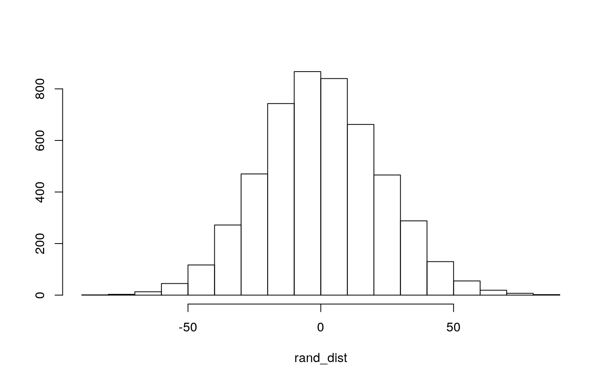

May 7, 2021
Modeling
Introduction
0. (5 pts)
I decided to expand upon what I worked on in Project 1 - which measured the relationship between education and crime - by focusing on a dataset that also relates to crime rates within the United States. For this project, I will be analyzing the Guns dataset from the AER library which looks at various variables related to crime rate, such as violent crime rate (violent), murder rate (murder), robbery rate (robbery), and incarceration rate (prisoners). The purpose of the Guns dataset is to provide data that can help determine if there is a relationship between having a concealed carry law (law) and crime rates. There are 1,173 observations in total with 13 variables, although the variables mentioned previously are the main variables under investigation.
#load all needed libraries beforehand
library(tidyverse)
library(dplyr)
library(mvtnorm)
library(ggExtra)
library(rstatix)
library(gridExtra)
library(AER)
library(lmtest)
library(sandwich)
library(plotROC)
library(glmnet)
data(Guns)
head(Guns)## year violent murder robbery prisoners afam cauc male
population income density
## 1 1977 414.4 14.2 96.8 83 8.384873 55.12291 18.17441
3.780403 9563.148 0.0745524
## 2 1978 419.1 13.3 99.1 94 8.352101 55.14367 17.99408
3.831838 9932.000 0.0755667
## 3 1979 413.3 13.2 109.5 144 8.329575 55.13586 17.83934
3.866248 9877.028 0.0762453
## 4 1980 448.5 13.2 132.1 141 8.408386 54.91259 17.73420
3.900368 9541.428 0.0768288
## 5 1981 470.5 11.9 126.5 149 8.483435 54.92513 17.67372
3.918531 9548.351 0.0771866
## 6 1982 447.7 10.6 112.0 183 8.514000 54.89621 17.51052
3.925229 9478.919 0.0773185
## state law
## 1 Alabama no
## 2 Alabama no
## 3 Alabama no
## 4 Alabama no
## 5 Alabama no
## 6 Alabama nonrow(Guns) #rows of observations within the dataset## [1] 1173MANOVA/ANOVA Testing
1. (15 pts)
#first, check MANOVA assumptions
group <- Guns$law
DVs <- Guns %>% select(violent, murder, robbery, prisoners)
#testing for multivariate normality for each group
sapply(split(DVs,group), mshapiro_test) #normality assumption was not met ## no yes
## statistic 0.7579409 0.8658216
## p.value 3.903153e-34 4.791584e-15#testing homogeneity of covariances
box_m(DVs, group) #covariance assumption was not met ## # A tibble: 1 x 4
## statistic p.value parameter method
## <dbl> <dbl> <dbl> <chr>
## 1 648. 1.02e-132 10 Box's M-test for Homogeneity of
Covariance Matrices#MANOVA test
mano <- manova(cbind(violent, murder, robbery, prisoners)~law, data=Guns)
summary(mano)## Df Pillai approx F num Df den Df Pr(>F)
## law 1 0.1249 41.677 4 1168 < 2.2e-16 ***
## Residuals 1171
## ---
## Signif. codes: 0 '***' 0.001 '**' 0.01 '*' 0.05 '.' 0.1
' ' 1#univariate ANOVA tests
summary.aov(mano)## Response violent :
## Df Sum Sq Mean Sq F value Pr(>F)
## law 1 5605560 5605560 52.364 8.319e-13 ***
## Residuals 1171 125355176 107050
## ---
## Signif. codes: 0 '***' 0.001 '**' 0.01 '*' 0.05 '.' 0.1
' ' 1
##
## Response murder :
## Df Sum Sq Mean Sq F value Pr(>F)
## law 1 2135 2134.76 38.944 6.086e-10 ***
## Residuals 1171 64190 54.82
## ---
## Signif. codes: 0 '***' 0.001 '**' 0.01 '*' 0.05 '.' 0.1
' ' 1
##
## Response robbery :
## Df Sum Sq Mean Sq F value Pr(>F)
## law 1 1538244 1538244 55.363 1.934e-13 ***
## Residuals 1171 32536070 27785
## ---
## Signif. codes: 0 '***' 0.001 '**' 0.01 '*' 0.05 '.' 0.1
' ' 1
##
## Response prisoners :
## Df Sum Sq Mean Sq F value Pr(>F)
## law 1 67344 67344 2.1064 0.147
## Residuals 1171 37437770 31971#pairwise t.tests
pairwise.t.test(Guns$violent, Guns$law, p.adj = "none")##
## Pairwise comparisons using t tests with pooled SD
##
## data: Guns$violent and Guns$law
##
## no
## yes 8.3e-13
##
## P value adjustment method: nonepairwise.t.test(Guns$murder, Guns$law, p.adj = "none")##
## Pairwise comparisons using t tests with pooled SD
##
## data: Guns$murder and Guns$law
##
## no
## yes 6.1e-10
##
## P value adjustment method: nonepairwise.t.test(Guns$robbery, Guns$law, p.adj = "none")##
## Pairwise comparisons using t tests with pooled SD
##
## data: Guns$robbery and Guns$law
##
## no
## yes 1.9e-13
##
## P value adjustment method: nonepairwise.t.test(Guns$prisoners, Guns$law, p.adj = "none")##
## Pairwise comparisons using t tests with pooled SD
##
## data: Guns$prisoners and Guns$law
##
## no
## yes 0.15
##
## P value adjustment method: none#probability of at least one type I error
1-0.95^9## [1] 0.3697506#Bonferroni corrections
0.05/9## [1] 0.005555556The probability of at least one type I error is 0.370. When adjusted using Bonferroni corrections, the modified significance level is 0.0056 which will be used as the significance level that all tests conducted will be compared to. Prior to the MANOVA test being conducted, the MANOVA assumptions were tested and were not met. Regardless, a MANOVA test was conducted. For the MANOVA test, since the p-value is less than 0.0056, this means that the null hypothesis is rejected and there is at least one difference in mean for law for at least one DV. For the ANOVA tests, violent, murder and robbery all had a difference in mean between observations that had concealed carry laws and those that did not. The pairwise t-tests confirmed this as violent, murder and robbery each compared with law all had p-values less than 0.0056. There was 1 MANOVA, 4 ANOVA, and 4 t-tests conducted which adds to 9 tests in total.
Randomization Testing
2. (10 pts)
#Randomization test using mean difference of violent crime rates between observations with and without concealed carry laws
Guns%>%group_by(law)%>%
summarize(means=mean(violent))%>%summarize(`mean_diff`=diff(means)) #true mean difference ## # A tibble: 1 x 1
## mean_diff
## <dbl>
## 1 -161.#simulating permutations for randomization test
rand_dist<-vector()
for(i in 1:5000){
new<-data.frame(violent=sample(Guns$violent),law=Guns$law)
rand_dist[i]<-mean(new[new$law=="yes",]$violent)-
mean(new[new$law=="no",]$violent)}
{hist(rand_dist,main="",ylab=""); abline(v = c(-161.1868, 161.1868),col="red")} #cannot see the absolute lines since there are no observations that far out 
#p-value for mean difference
mean(rand_dist < -161.1868 | rand_dist > 161.1868) #p-value is essentially zero## [1] 0The null hypothesis is that the mean of violent crime rate is the same between observations without and with concealed carry laws. The alternative hypothesis is that the mean of violent crime rate is not the same between observations without and with concealed carry laws. A randomization test with mean differences was performed to assess these hypotheses. Based on the domain of the histogram and how the p-value is less than 0.05, this suggests that the null hypothesis is rejected.
Linear Regression Model and Robust SEs
3. (40 pts)
#mean-centering of numeric variable
Guns$robbery_c<-Guns$robbery-mean(Guns$robbery)
#linear regression model predicting incarceration rate `prisoners` from robbery rate and concealed gun law status
fit<-lm(prisoners ~ robbery_c * law, data=Guns)
fit##
## Call:
## lm(formula = prisoners ~ robbery_c * law, data = Guns)
##
## Coefficients:
## (Intercept) robbery_c lawyes robbery_c:lawyes
## 209.9137 0.6031 96.7130 0.4399#ggplot() of regression
ggplot(Guns, aes(robbery_c, prisoners, color = law)) + geom_smooth(method = "lm", se = F, fullrange = T, aes(color = law)) +
geom_point()+geom_vline(xintercept=0,lty=2)#R-squared/proportion of variation in outcome explained by model
summary(fit)##
## Call:
## lm(formula = prisoners ~ robbery_c * law, data = Guns)
##
## Residuals:
## Min 1Q Median 3Q Max
## -672.49 -81.80 -23.15 68.01 1412.09
##
## Coefficients:
## Estimate Std. Error t value Pr(>|t|)
## (Intercept) 209.91370 4.83963 43.374 < 2e-16 ***
## robbery_c 0.60313 0.02602 23.180 < 2e-16 ***
## lawyes 96.71300 11.57079 8.358 < 2e-16 ***
## robbery_c:lawyes 0.43990 0.10034 4.384 1.27e-05 ***
## ---
## Signif. codes: 0 '***' 0.001 '**' 0.01 '*' 0.05 '.' 0.1
' ' 1
##
## Residual standard error: 143.3 on 1169 degrees of
freedom
## Multiple R-squared: 0.3596, Adjusted R-squared: 0.358
## F-statistic: 218.8 on 3 and 1169 DF, p-value: < 2.2e-16#checking assumptions
bptest(fit) #H0 = homoskedastic ##
## studentized Breusch-Pagan test
##
## data: fit
## BP = 229.6, df = 3, p-value < 2.2e-16resids<-fit$residuals
shapiro.test(resids) #H0 = true distribution is normal##
## Shapiro-Wilk normality test
##
## data: resids
## W = 0.86205, p-value < 2.2e-16#robust standard errors comparison
summary(fit)$coef[,1:2] #uncorrected standard errors## Estimate Std. Error
## (Intercept) 209.9137042 4.83962597
## robbery_c 0.6031308 0.02601918
## lawyes 96.7129959 11.57079189
## robbery_c:lawyes 0.4399017 0.10033908coeftest(fit, vcov = vcovHC(fit))[,1:2] #corrected robust standard errors ## Estimate Std. Error
## (Intercept) 209.9137042 4.09673416
## robbery_c 0.6031308 0.08682214
## lawyes 96.7129959 12.53768778
## robbery_c:lawyes 0.4399017 0.13568650Assuming no concealed carry law is enforced, there is a 0.61 increase in incarceration prisoner rate per 100,000 residents for every 1-unit increase in robbery rate on average. For observations of average robbery rate, there is a 96.7130 increase in incarceration prisoner rate per 100,000 residents for observations with concealed carry law than those without. The slope for robbery rate on incarceration prisoner rate is 0.4399 higher for observations with concealed carry law compared to observations without concealed carry law.
The proportion of variation in prisoner explained by the model is 0.3596 or 0.358 with an adjusted R squared. Assumptions of linearity, normality and homoskedasticity were not met according to the hypothesis test conducted. Since the assumption of homoskedasticity was not met, the standard errors should be made robust to correct for violations of homoskedasticity. The robust SEs are slightly larger than the uncorrected standard errors for all three coefficients.
Bootstrapping
4. (5 pts)
fit<-lm(prisoners ~ robbery_c * law, data=Guns)
#bootstrap residuals
resids<-fit$residuals
fitted<-fit$fitted.values
#resample residuals with replacement
resid_resamp<-replicate(5000,{
new_resids<-sample(resids,replace=TRUE)
Guns$new_y<-fitted+new_resids
fit<-lm(new_y~robbery_c*law,data=Guns)
coef(fit)
})
#estimated bootstrapped standard errors
resid_resamp%>%t%>%as.data.frame%>%summarize_all(sd)## (Intercept) robbery_c lawyes robbery_c:lawyes
## 1 4.822384 0.02598504 11.64283 0.09902512The difference between the original, robust and bootstrapped SEs is fairly small and within decimal range of one another.
Logistic Regression Model
5. (30 pts)
#create binary variable from `law`
Guns_data <- Guns%>%mutate(y=ifelse(law=="yes",1,0))
#logistic regression
fit2<-glm(y~violent+murder+robbery, data=Guns_data, family="binomial")
coeftest(fit2)##
## z test of coefficients:
##
## Estimate Std. Error z value Pr(>|z|)
## (Intercept) -0.09729476 0.15769946 -0.6170 0.5372590
## violent 0.00162189 0.00064538 2.5131 0.0119681 *
## murder -0.11270837 0.03015333 -3.7378 0.0001856 ***
## robbery -0.00820338 0.00166643 -4.9227 8.535e-07 ***
## ---
## Signif. codes: 0 '***' 0.001 '**' 0.01 '*' 0.05 '.' 0.1
' ' 1#odds scaled coefficients
coef(fit2)%>%exp%>%round(5)%>%data.frame## .
## (Intercept) 0.90729
## violent 1.00162
## murder 0.89341
## robbery 0.99183#confusion matrix for the logistic regression
probs<-predict(fit2,type="response")
table(predict=as.numeric(probs>.5),truth=Guns_data$y)%>%addmargins## truth
## predict 0 1 Sum
## 0 887 283 1170
## 1 1 2 3
## Sum 888 285 1173(887+2)/1173 #accuracy## [1] 0.75788582/285 #TPR## [1] 0.007017544887/888 #TNR## [1] 0.99887392/3 #PPV## [1] 0.6666667#density plot of log-odds colored by binary `law` variable
Guns_data$logit<-predict(fit2,type="link")
Guns_data%>%ggplot()+geom_density(aes(logit,color=law,fill=law), alpha=.4)+
theme(legend.position=c(.85,.85))+geom_vline(xintercept=0)+xlab("logit (log-odds)")+
geom_rug(aes(logit,color=law))
#ROC Curve
ROCplot<-ggplot(Guns_data)+geom_roc(aes(d=law,m=probs), n.cuts=0)
ROCplot#AUC
calc_auc(ROCplot)## PANEL group AUC
## 1 1 -1 0.7039493While holding murder and robbery constant, adding 1 unit to violent multiplies odds by a factor of e^0.0016. Holding violent and robbery constant, adding 1 unit to murder multiplies odds by a factor of e^-0.1127. Holding violent and murder constant, adding 1 unit to robbery multiplies odds by a factor of e^-0.0082. Accuracy is the proportion predicted that was actually correctly predicted which is 0.7579. The true positive rate (TPR) is the probability of predicting an observation to have a concealed carry law if they actually have it which in this case is 0.007. True negative rate (TNR) is the probability of predicting an observation to not have a concealed carry law if they actually do not have it which is 0.9989. Precision (PPV) is the proportion predicted as having a concealed carry law that actually have one which is 0.667. The area under curve (AUC) is a quantifiable measurement of how well the model is predicting overall which was calculated to be 0.7039. This AUC value is relatively weak as ideally, we would want it to be 1 which would mean the predictions were completely accurate.
Logistic Regression Model (cont.), 10-fold CV, and LASSO
6. (25 pts)
- Fit model, compute in-sample classification diagnostics (Accuracy, Sensitivity, Specificity, Precision, AUC), and interpret (5)
- Perform 10-fold (or repeated random sub-sampling) CV with the same model and report average out-of-sample classification diagnostics (Accuracy, Sensitivity, Specificity, Precision, and AUC); interpret AUC and compare with the in-sample metrics (10)
- Perform LASSO on the same model/variables. Choose lambda to give the simplest model whose accuracy is near that of the best (i.e., lambda.1se). Discuss which variables are retained. (5)
- Perform 10-fold CV using only the variables lasso selected: compare model’s out-of-sample AUC to that of your logistic regressions above (5)
Guns_data <- Guns%>%mutate(y=ifelse(law=="yes",1,0)) %>% select(-year,-state, robbery_c) #removed variable `year` and `state` as they significantly skewed the logistic regression calculations
Guns_data$law <- NULL
#logistic regression for all variables
fit_all <- glm(y~(.), data=Guns_data, family = "binomial")
coeftest(fit_all)##
## z test of coefficients:
##
## Estimate Std. Error z value Pr(>|z|)
## (Intercept) -1.0861e+01 3.8640e+00 -2.8107 0.0049429 **
## violent -2.4644e-03 8.4653e-04 -2.9111 0.0036011 **
## murder -1.5629e-01 5.1368e-02 -3.0425 0.0023461 **
## robbery 2.5295e-03 2.4252e-03 1.0430 0.2969548
## prisoners 4.7949e-03 1.0400e-03 4.6105 4.016e-06 ***
## afam 5.9273e-01 1.2285e-01 4.8249 1.401e-06 ***
## cauc 3.2651e-01 5.8920e-02 5.5416 2.997e-08 ***
## male -5.7396e-01 7.8846e-02 -7.2795 3.351e-13 ***
## population 1.5643e-02 2.3650e-02 0.6614 0.5083476
## income -2.9293e-04 7.2871e-05 -4.0199 5.824e-05 ***
## density -2.9891e+00 7.8347e-01 -3.8152 0.0001361 ***
## robbery_c NA NA NA NA
## ---
## Signif. codes: 0 '***' 0.001 '**' 0.01 '*' 0.05 '.' 0.1
' ' 1#odds scaled coefficients
coef(fit_all)%>%exp%>%round(5)%>%data.frame## .
## (Intercept) 0.00002
## violent 0.99754
## murder 0.85531
## robbery 1.00253
## prisoners 1.00481
## afam 1.80892
## cauc 1.38612
## male 0.56329
## population 1.01577
## income 0.99971
## density 0.05033
## robbery_c NA#function that calculates accuracy, TRP, TNP, PPV, and AUC
class_diag <- function(probs,truth){
#CONFUSION MATRIX
if(is.character(truth)==TRUE) truth<-as.factor(truth)
if(is.numeric(truth)==FALSE & is.logical(truth)==FALSE) truth<-as.numeric(truth)-1
tab<-table(factor(probs>.5,levels=c("FALSE","TRUE")),factor(truth, levels=c(0,1)))
acc=sum(diag(tab))/sum(tab)
sens=tab[2,2]/colSums(tab)[2]
spec=tab[1,1]/colSums(tab)[1]
ppv=tab[2,2]/rowSums(tab)[2]
#CALCULATE EXACT AUC
ord<-order(probs, decreasing=TRUE)
probs <- probs[ord]; truth <- truth[ord]
TPR=cumsum(truth)/max(1,sum(truth))
FPR=cumsum(!truth)/max(1,sum(!truth))
dup <-c(probs[-1]>=probs[-length(probs)], FALSE)
TPR <-c(0,TPR[!dup],1); FPR<-c(0,FPR[!dup],1)
n <- length(TPR)
auc <- sum( ((TPR[-1]+TPR[-n])/2) * (FPR[-1]-FPR[-n]))
data.frame(acc,sens,spec,ppv,auc)
}
#calculate in-sample classification diagnostics using `class_diag`
probs_all <- predict(fit_all, type="response")
class_diag(probs_all, Guns_data$y)## acc sens spec ppv auc
## 1 0.8030691 0.4210526 0.9256757 0.6451613 0.8379248The in-sample classification diagnostics produced an accuracy of 0.8031, sensitivity (TPR) of 0.4211, specificity (TNR) of 0.9257, precision (PPV) of 0.6452 and AUC of 0.838. The AUC provides a good overall assessment of the logistic regression model’s performance and since its value of 0.838 is fairly high, this means that the model performed well.
#10-fold CV with out-of-sample classification diagnostics
set.seed(1234)
k=10
data <- Guns_data %>% sample_frac #put rows of dataset in random order
folds <- ntile(1:nrow(data),n=10) #create fold labels
diags<-NULL
for(i in 1:k){
train <- data[folds!=i,] #create training set (all but fold i)
test <- data[folds==i,] #create test set (just fold i)
truth <- test$y #save truth labels from fold i
fit_all2 <- glm(y~(.), data=train, family="binomial")
probs_all2 <- predict(fit_all2, newdata=test, type="response")
diags<-rbind(diags,class_diag(probs_all2,truth))
}
summarize_all(diags,mean)## acc sens spec ppv auc
## 1 0.7996306 0.4248165 0.9208604 0.6280945 0.8348503The average out-of-sample classification diagnostics produced an accuracy of 0.7996, sensitivity of 0.4248, specificity of 0.9209, precision of 0.6281, and AUC of 0.8349. The AUC is also fairly high and demonstrates that the model overall performs well as a predictor. The in-sample metrics were very similar to these out-of-sample metrics.
#LASSO
y<-as.matrix(Guns_data$y) #response variable
x<-model.matrix(y~.,data=Guns_data)[,-1] #predictor variables
head(x)## violent murder robbery prisoners afam cauc male
population income density
## 1 414.4 14.2 96.8 83 8.384873 55.12291 18.17441 3.780403
9563.148 0.0745524
## 2 419.1 13.3 99.1 94 8.352101 55.14367 17.99408 3.831838
9932.000 0.0755667
## 3 413.3 13.2 109.5 144 8.329575 55.13586 17.83934
3.866248 9877.028 0.0762453
## 4 448.5 13.2 132.1 141 8.408386 54.91259 17.73420
3.900368 9541.428 0.0768288
## 5 470.5 11.9 126.5 149 8.483435 54.92513 17.67372
3.918531 9548.351 0.0771866
## 6 447.7 10.6 112.0 183 8.514000 54.89621 17.51052
3.925229 9478.919 0.0773185
## robbery_c
## 1 -65.0202
## 2 -62.7202
## 3 -52.3202
## 4 -29.7202
## 5 -35.3202
## 6 -49.8202cv<-cv.glmnet(x,y,family="binomial")
lasso<-glmnet(x,y,family="binomial",lambda=cv$lambda.1se)
coef(lasso)## 12 x 1 sparse Matrix of class "dgCMatrix"
## s0
## (Intercept) 3.368542e+00
## violent -2.100207e-03
## murder .
## robbery -1.586893e-03
## prisoners 4.408382e-03
## afam .
## cauc 6.290400e-02
## male -4.434996e-01
## population -3.089554e-03
## income -9.511202e-05
## density -6.559318e-01
## robbery_c -4.668875e-04Note that each observation is for a specific state at a specific year (ex. Texas in 1978).The variables retained after performing LASSO are violent crime rates (violent), robbery rates (robbery), incarceration rates (prisoners), percent of population within state that is Caucasian (cauc), percent of population within state that is male (male), state population size (population), real per capita personal income for that state (income), and population per square mile (density).
#10-fold CV with LASSO selected variables
set.seed(1234)
k=10
data <- Guns_data %>% sample_frac #put rows of dataset in random order
folds <- ntile(1:nrow(data),n=10) #create fold labels
diags<-NULL
for(i in 1:k){
train <- data[folds!=i,] #create training set (all but fold i)
test <- data[folds==i,] #create test set (just fold i)
truth <- test$y #save truth labels from fold i
fit_all2 <- glm(y~violent+robbery+prisoners+cauc+male+population+income+density, data=train, family="binomial")
probs_all2 <- predict(fit_all2, newdata=test, type="response")
diags<-rbind(diags,class_diag(probs_all2,truth))
}
summarize_all(diags,mean)## acc sens spec ppv auc
## 1 0.7996668 0.4396764 0.9153387 0.6297249 0.8233323This out-of-sample AUC is 0.8233 which very similar but slightly lower than the AUC of the above two regressions. All three AUCS are good performance values and thus indicate that each of the three models are good predictors for concealed carry laws (law)
…